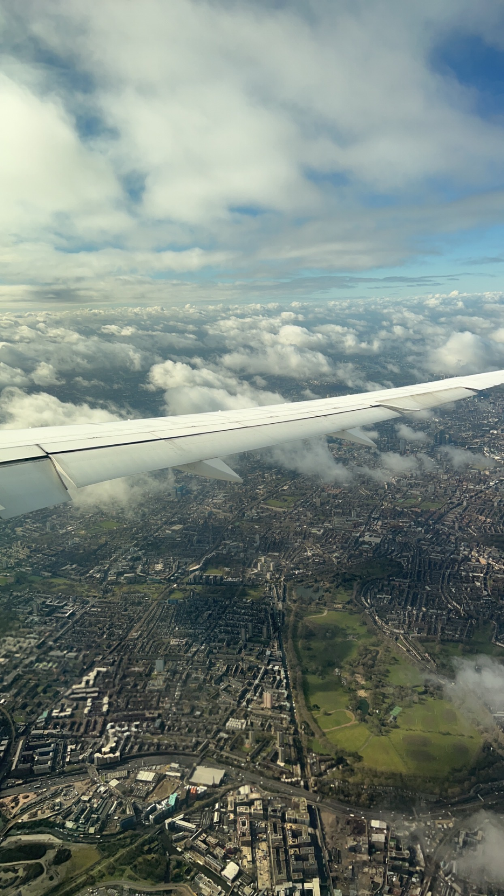
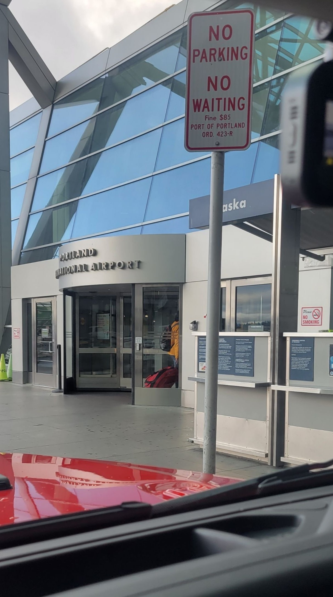
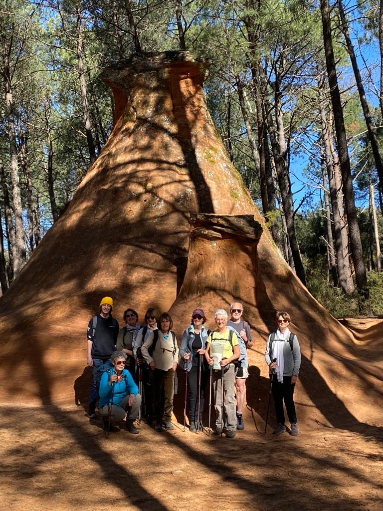
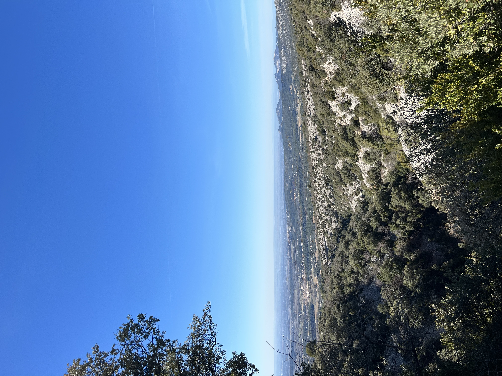
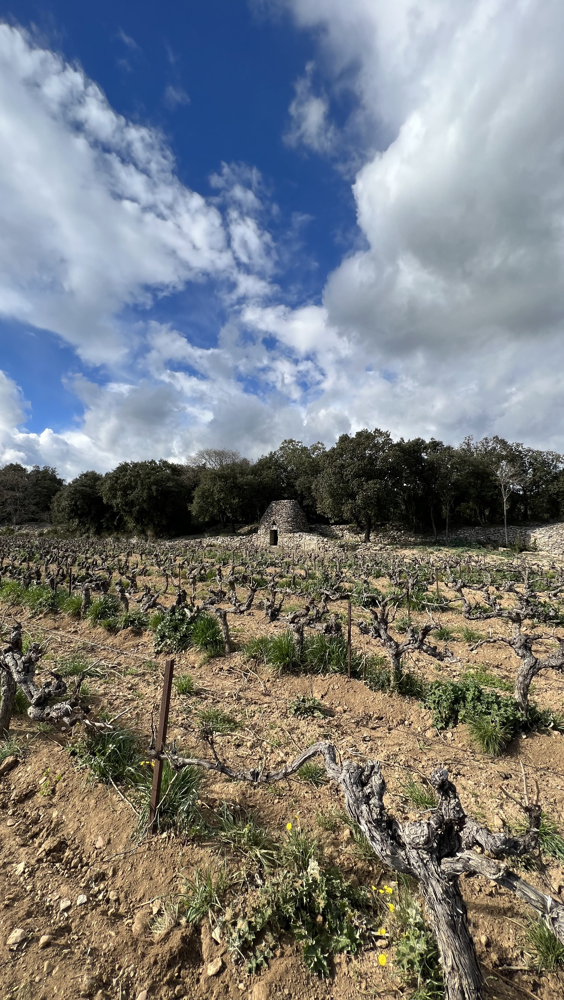
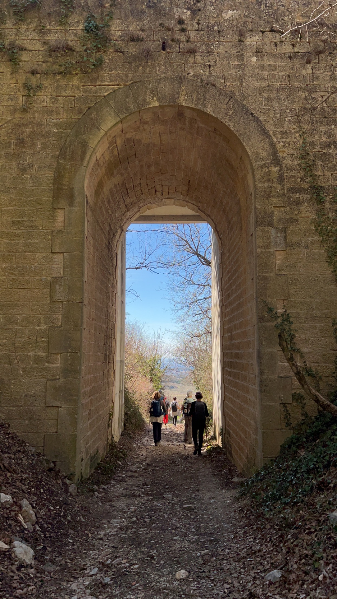
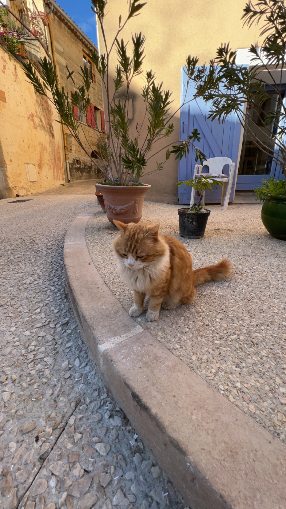
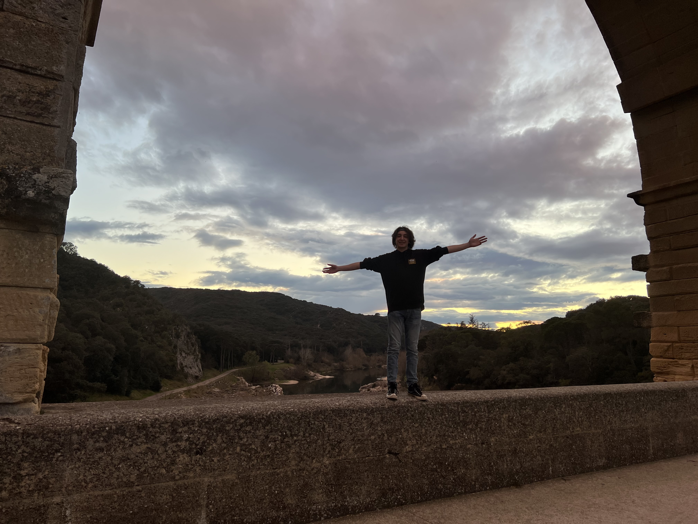

At 7:30pm, on March 13th, I was sat in an airplane seat in the middle of the economy section with a whole row to myself waiting for the airline crew to finish their final checks before takeoff. I had a nine and a half hour flight ahead of me to London, where I had a two hour layover before my final desination; Marseille France. Knowing myself to be awful at falling asleep in cars, let alone airplanes, I had given myself plenty of things to entertain myself. I spent most of the flight listening to music and watching The Last Of Us. And if you're wondering, no, I wasn't able to sleep at all during that flight. Below is the last picture of me in Oregon before I left for Europe. There won't be any others until mid July so stay tuned for that.
 After navigating through the airport in London, making my way through security, and finding some warm food, I sat exhausted at my gate. The flight to Marseille was uneventful; I actually slept on this one. All in all I was just happy to have found a flight all the way to France from Portland with just one short layover. My exact path was: PDX -> LHR -> MRS
Once I found my Grandma we were on the road; roughly an hour drive to my new home, in the small town of Saint-Saturnin-lès-Avignon; population 5000. More specifically lying in the Southeastern part of France in the region Provence, near the city of Avignon. Known for its sunny landscapes, lavender fields, a plethora of wines, and markets sprawled throughout the different villages, the region of Provence has long attracted many important figures and gifted artists alike. Vincent van Gogh, Pablo Picasso, and Claude Monet are just a few examples of painters inspired by this region. The strong wind that blows through the entire region, known as the Mistral, is said to be the cause of the unique climate and "painter's light"; bringing constant dry air and breaking up any clouds that might form. Especially coming from the grey and rainy Portland Oregon, it was shocking just how few clouds I saw in my time here. But that was after I adjusted to the time difference.
Jet lag is a brand new experience for me so the first couple days were spent doing nothing much other than unpacking and sleeping at strange hours. Once more or less adjusted, on the third day my Grandma invited me on a hike with a group she meets with every week in the mountain. At 8am sharp on thursday morning we met in a community parking lot in the center of town, and began driving to the chosen trail. At first the path was relatively even and beaten down, however as we rose in elevation it turned into rough chunks of rock and the mountain closed in to a narrow canyon. I quickly realized how serious this group of 60-70 year olds were about their weekly hikes. We ate lunch at the top, and made our way down a different trail totalling in 10.5 miles. Needless to say I slept like a rock that night.
   We spent the rest of the first week visiting towns and villages nearby St. Saturnin, meeting my Grandma's friends and soaking in the culture of Provence. Something that struck me right away was that every town we visited had a thing. For example in Saint-Quentin-la-Poterie there were lots of pottery shops with everything from vases or decorational plates to roof tiles. Pernes-les-Fontaines has over forty fountains spread throught the town. Others are just known for being built around beautiful landmarks, or having important people tied to them. It wasn't uncommon to see towns with castle walls surrounding them, or marking a historic section of the town leftover from medieval times. The Roman architecture and ruins were facinating as well. Pont Du Gard was the most intersting to me, a first century Roman aquaduct that carried water over 30 miles to what is now the city of Nîmes. It is the biggest and one of the best perserved aquaduct bridges crossing the river Gardon. Throughout the rest of the week I saw a traditional Provencal flute and drum, a model train club with a history of over 40 years, and a ridiculous amount of cats roaming the streets.
 